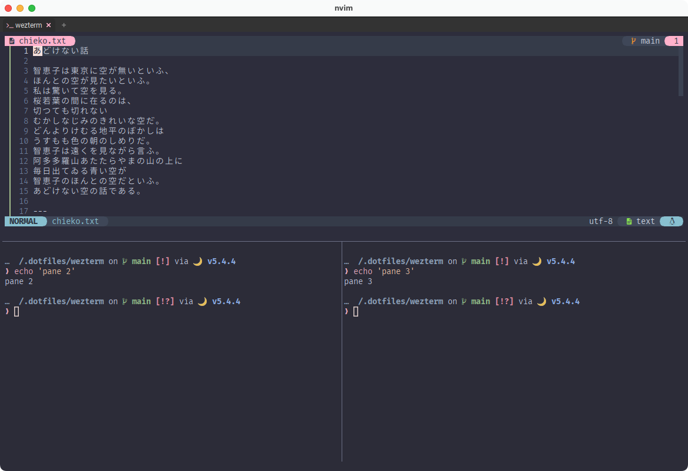

Tab
さて、引き続きformat.luaに追記していきましょう。今回はタブタイトルです。
local HEADER = '' -- 文字化けしちゃってるかもしれませんが、アイコンフォント入ってます。
local SYMBOL_COLOR = { '#ffb2cc', '#a4a4a4' }
local FONT_COLOR = { '#dddddd', '#888888' }
local BACK_COLOR = '#2d2d2d'
local HOVER_COLOR = '#434343'
wezterm.on('format-tab-title', function(tab, tabs, panes, config, hover, max_width)
local index = tab.is_active and 1 or 2
local bg = hover and HOVER_COLOR or BACK_COLOR
local zoomed = tab.active_pane.is_zoomed and '🔎 ' or ' '
return {
{ Foreground = { Color = SYMBOL_COLOR[index] } },
{ Background = { Color = bg } },
{ Text = HEADER .. zoomed },
{ Foreground = { Color = FONT_COLOR[index] } },
{ Background = { Color = bg } },
{ Text = tab.active_pane.title },
}
end)
これもウィンドウタイトルと同じように、wezterm.onを使ってformat-tab-titleイベントの処理を書いています。
色は適宜調整してください。
The format-tab-title event is emitted when the text for a tab title needs to be recomputed.
format-tab-title イベントは、タブタイトルのテキストを再計算する必要があるときに発行されます。
これもウィンドウタイトルとほぼ同じですね。
所々で状態によって表示するものを変えていますが、やっていることはzoomedとhoverの可視化ですね。
タブタイトル
上にある例では表示する内容は特に加工していませんが、前回作ったBaseNameに通すのもスッキリしてオススメです。
Zoomed
ズーム中はタブに 🔎 アイコンを表示してます。
Toggles the zoom state of the current pane. A Zoomed pane takes up all available space in the tab, hiding all other panes while it is zoomed.
現在のペインのズーム状態をトグルします。 ズームされたペインは、タブ内で利用可能な全てのスペースを占め、ズーム中は他のペインが全て非表示になります。
デフォルトのキーバインドだとZoom機能が割り当てられていないと思うので、keybinds.luaに入れておきましょう。
使い方としては、まあこんな感じになってたとして...
(ペイン操作については3.6 Leader Keyでふわっと話題にしました。)

上のペインにいる状態でズームすると...

"ズーム中は他のペインが全て非表示になります。"のドキュメントどおり😏
左上に 🔎 アイコンが出ていることも確認できましたね。
もう一度同じ操作で戻ります。
Hover
ホバー中は該当のタブ背景色を少し変えてます。
true if the current tab is in the hover state
現在のタブがホバー状態である場合に true を返します。
少しluaのお話
local SYMBOL_COLOR = { '#ffb2cc', '#a4a4a4' }
local FONT_COLOR = { '#dddddd', '#888888' }
local index = tab.is_active and 1 or 2
{ Foreground = { Color = SYMBOL_COLOR[index] } },
lua の配列は[1]始まりなので、(Cとかは[0]から始まりますよね。)
三項演算子local index = tab.is_active and 1 or 2によってSYMBOL_COLOR配列とFONT_COLOR配列それぞれから採用する色を切り替えます。
else節を消せるだけ消す書き方、わたしは好きなんですがどうでしょう?